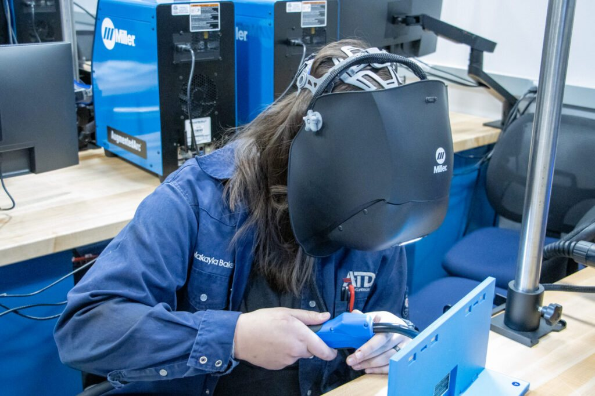
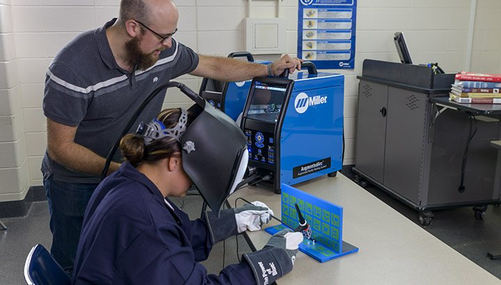
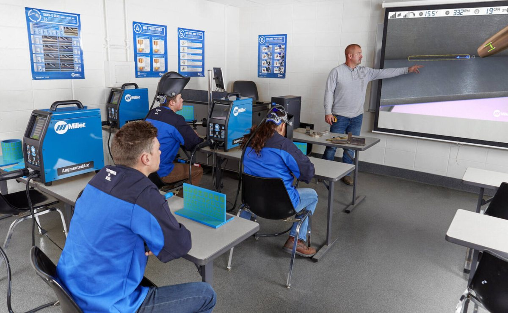

If you teach welding, you already know the problem this course is about. More students want to participate than you have booths for. Steel for practice coupons costs more every year. There is no room to add more stations. Typically, a grant or a professional development discussion suggests augmented reality as a possible solution.
The research backing this technology is encouraging. AR welding simulators let students practice movement and technique before they strike an arc, without consuming steel or booth time. But the studies so far are small, and whether the technology helps in your lab depends more on how you use it than on what it can do.
That’s what this course is for.
It assumes you are comfortable teaching welding with traditional methods and have no prior experience with AR. This course does not do a deep dive into simulator configuration and debugging; the system’s vendor will do that! It will prepare you to weigh whether a system fits your program, read the feedback data it produces, decide which of your curriculum standards it can support, and build a plan for putting the simulator to work in your course next term.
There are four units, each about 60 to 90 minutes, that you will work through at your own pace. You will finish with a completed integration plan you can use before the term starts. A goal of this course is to build your confidence teaching with augmented reality, step by step.
Next: the Syllabus
Before you open Unit 1, read the Syllabus. It explains how the units work, how your work is assessed, and what to expect.



Photos: Miller Electric, AugmentedArc.